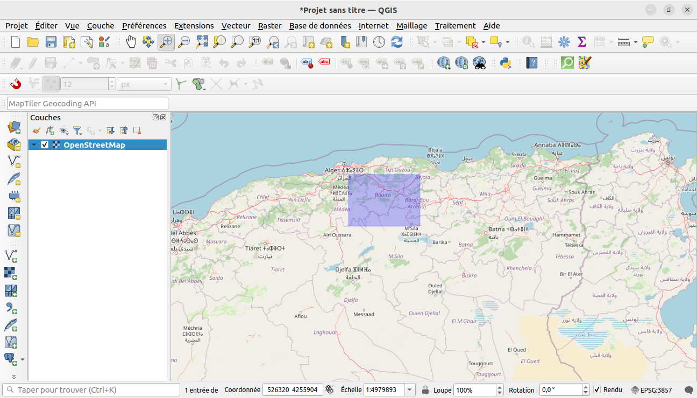

Téléchargement de données
- Télécharger les données cartographiques OpenStreetMap
- données OpenStreetMap En utilisant: les extentions QGIS
- données statistiques: Office Nationnal des Statisitques
- Limite administrative: DIVA-GIS
- Données raster: Digital Elevation Database
- Acheter des cartes:Institut National de Cartographie et de Télédétection
Office Nationnal des Statisitques
Vous pouvez utiliser les données statistiques fournits par l'ONS puis les représenter graphiquement pour faciliter la lecture visuelle
Par exemple vous pouvez créer une carte de distrubution de population par communes en utilisant les données ONS
MONOGRAPHIE WILAYA BOUIRA
Le fichier en ligne MONOGRAPHIE WILAYA BOUIRA.pdf contient des données statistiques que vous pouvez utiliser afin de s'exercer
Extraction depuis DIVA-GIS
DIVA-GIS est un programme informatique gratuit pour la cartographie et l'analyse de données géographiques (SIG). il fourner également des données spatiales gratuites.
Ouvrez le liens et cliquez sur Free Spatial Data:

Cliquez sur country level data

Dans la liste déroulante selectionnz Algeria

Puis cliquez sur Download

Vous aurez un dossier compressé qui contient trois shapefiles limite administrative de l'Algérie pour les niveaux suivants:
- DZA_adm0: frontière nationnal
- DZA_adm1: frontières wilaya
- DZA_adm2: frontières communale

Choix de la zone d'étude
Vous pouvez extraire les frontière d'une wilaya ou une commune selon l'étude! il y a plusieurs méthodes pour le faire par exemple en utilisant QGIS:
Sauvegarder la selection:
selectionner une commune
Extraction des données OSM.
A partir du QGIS
QuickOSM est un plugin QGIS,son role est de télécharger des données depuis le serveur Overpass.
Nous allons extraire quelques données spatiales liées à une des commune de Bouira
OSM: Limite administrative
Au chapitre précédent nous avons télécharger les limite offertes par DIVA-GIS, QuickOSM offre aussi la possibilité de les télécharger
Ouvrez le gestionnaire de source de données et selectinnez l'onglet explorateur puis cliquez sur XYZ Tiles, double cliquez ensuite sur openstreetmap
La couche Raster OpenStreetMap est insérée
Focaliser Bouira
QuickOSM
QuickOSM
Exécutez le plugin à partir du menu .
Dans la zone préreglage, tapez boundary dans le menu déroulant .
Laissez le champ vide.
Sélectionnez dans le menu déroulant suivant, et ecrire bouira bouira Algeria
Développez le groupe ci-dessous et décochez tous les types de géométrie sur la droite sauf Multipolygones.
Pressez
Une nouvelle couche est ajoutée au panneau , montrant les limites administrative de bouira dans l’étendue sélectionnée.
Sauvegarder

l'icon mentionnée sur la figure à gauche signifier que la couche est temporaire une fois le projet fermé elle sera perdue!
cliquez sur ladite icone pour sauvegarder la couche

Pour n'avoir que la commune de clique droit sur le nom de la couche puis sur


Symbologie

Procédez comme ci-dessus pour extraire d’autres données :
et type de géométrie .
, et type de géométrie .
et vérifiez les types de géométrie et .
, et type de géométrie
, et vérifier les types de géométrie et .
et type de géométrie .
pour les 6 étapes suivantes sélectionnez dans le menu déroulant suivant, et ecrire le nom de la couche masque pour toutes les autres couches


Réorganisation des calques
Les calques dans votre liste de calques sont dessinés sur la carte dans un certain ordre. Le calque en bas de la liste est dessiné en premier, et le calque en haut est dessiné en dernier. En changeant leur ordre dans la liste, vous pouvez changer l’ordre suivant lesquel ils sont dessinés.